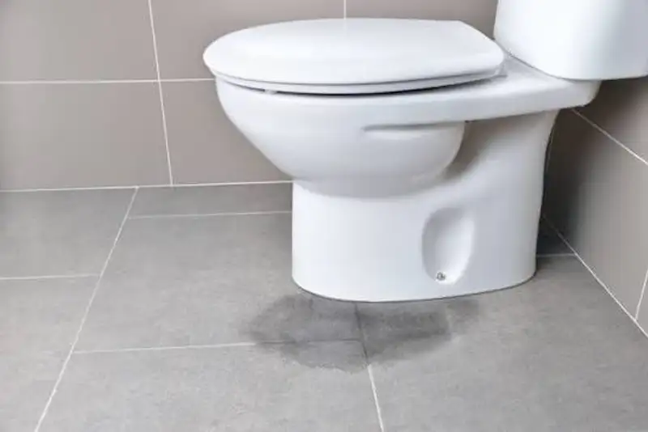

Daftar Isi
- Mengapa Waterproofing Sangat Penting?
- Apa Saja Jenis Material Waterproofing?
- Bagaimana Persiapan Permukaan?
- Tahapan Aplikasi Langkah demi Langkah
- Berapa Lama dan Bagaimana Uji Genangan Dilakukan?
- Kemiringan Lantai dan Detail Sambungan
- Kesalahan Waterproofing yang Sering Terjadi
- Kapan Waterproofing Perlu Diperbaiki?
- FAQ
Waterproofing kamar mandi lantai 2 adalah pelapis kedap air pada lantai dan dinding basah yang diuji genangan agar air tidak merembes ke plafon bawah.
- Waterproofing melindungi pelat beton, plafon, dan instalasi di lantai bawah dari rembesan air.
- Material yang umum dipakai adalah cementitious coating, membran cair, dan membran lembaran.
- Permukaan harus bersih, kering sesuai petunjuk, dan sudutnya diperkuat sebelum dilapisi.
- Uji genangan sekitar 24 sampai 72 jam wajib dilakukan sebelum keramik dipasang.
- Sudut, pipa tembus, dan sekitar floor drain adalah titik paling rawan bocor.
Mengapa Waterproofing Kamar Mandi Lantai 2 Sangat Penting?
Waterproofing kamar mandi lantai 2 sangat penting karena kebocoran di lantai atas merusak plafon, dinding, dan instalasi listrik di bawahnya serta mahal diperbaiki.
Beton bukan bahan kedap air sempurna. Pori dan retak rambut pada pelat dapat meloloskan air perlahan. Tanpa lapisan pelindung, air merembes menembus pelat lalu muncul di ruang bawah sebagai bercak, jamur, atau plafon yang rusak.
Kebocoran di lantai atas juga sulit dideteksi sejak awal. Air sering menyebar di dalam screed dan baru terlihat setelah kerusakan meluas. Karena itu, pencegahan lewat waterproofing yang benar jauh lebih efisien daripada memperbaiki setelah keramik terpasang.
Waterproofing bukan lapisan tambahan yang boleh dihemat. Ia adalah bagian inti dari sistem kedap air kamar mandi lantai 2, bersama kemiringan lantai dan detail sambungan.
Apa Saja Jenis Material Waterproofing yang Umum Dipakai?
Material waterproofing yang umum dipakai untuk kamar mandi meliputi cementitious coating, membran cair akrilik atau poliuretan, dan membran lembaran, masing-masing dengan kelebihan dan batasan.
Pemilihan material bergantung pada kondisi permukaan, anggaran, dan petunjuk pabrikan. Perbandingan umumnya sebagai berikut:
| Jenis Material | Kelebihan | Batasan |
|---|---|---|
| Cementitious coating | Mudah diaplikasikan, cocok untuk permukaan beton lembap | Kurang elastis pada retak yang bergerak |
| Membran cair akrilik / poliuretan | Elastis, menyatu tanpa sambungan | Perlu permukaan bersih dan waktu kering cukup |
| Membran lembaran | Ketebalan seragam dari pabrik | Sambungan dan sudut menuntut ketelitian |
Beberapa proyek memadukan dua jenis material, misalnya cementitious coating pada lantai dan membran cair pada sudut. Kombinasi apa pun harus kompatibel dan mengikuti rekomendasi produsen.
Bagaimana Persiapan Permukaan Sebelum Waterproofing?
Persiapan permukaan sebelum waterproofing mencakup pembersihan debu dan minyak, pembobokan bagian keropos, sudut lengkung, penutupan retak, serta sealant di sekitar pipa dan floor drain.
Permukaan yang kotor membuat lapisan waterproofing tidak melekat sempurna. Langkah persiapan yang lazim adalah:
- Membersihkan debu, sisa adukan, minyak, dan kotoran lain dari permukaan pelat.
- Membobok bagian beton yang keropos, lalu menambalnya dengan mortar perbaikan.
- Membuat sudut lantai dan dinding berbentuk lengkung kecil agar lapisan tidak retak di sudut tajam.
- Menutup retak rambut dengan bahan perbaikan yang sesuai.
- Memasang sealant atau lapisan penguat pada sekeliling pipa tembus dan floor drain.
Pelat yang baru dicor perlu cukup umur sebelum dilapisi. Lamanya mengikuti petunjuk produk dan kondisi cuaca.
Bagaimana Tahapan Aplikasi Waterproofing Langkah demi Langkah?
Aplikasi waterproofing dilakukan bertahap: primer, lapisan pertama, lapisan kedua dengan arah menyilang, naik ke dinding, lalu pengeringan sesuai petunjuk pabrikan sebelum uji genangan.
Berikut urutan aplikasi yang umum dipakai:
- Aplikasikan primer bila disyaratkan produk, lalu tunggu hingga kering.
- Lapisi bagian paling rawan lebih dulu: sudut, sekeliling pipa, dan sekitar floor drain, dengan penguat bila perlu.
- Aplikasikan lapisan pertama secara merata pada seluruh lantai.
- Naikkan lapisan ke dinding hingga ketinggian yang ditetapkan, dan lebih tinggi di area shower.
- Aplikasikan lapisan kedua dengan arah menyilang terhadap lapisan pertama.
- Biarkan mengering dan mengeras sesuai waktu yang tertera pada lembar data produk.
- Lakukan uji genangan air.
Jumlah lapisan dan ketebalan mengikuti spesifikasi produk. Pengurangan lapisan demi menghemat waktu atau biaya berisiko menurunkan kinerja kedap air.
Berapa Lama dan Bagaimana Uji Genangan Air Dilakukan?
Uji genangan air dilakukan dengan menutup floor drain lalu menggenangi lantai beberapa sentimeter selama sekitar 24 sampai 72 jam sambil memeriksa plafon lantai bawah.
Uji genangan atau ponding test adalah cara paling langsung untuk memastikan waterproofing bekerja. Floor drain ditutup dengan sumbat, lalu lantai digenangi air hingga ketinggian beberapa sentimeter, biasanya melewati titik terendah lantai namun tidak melebihi ambang dinding yang telah dilapisi.
Sebagai gambaran, genangan setinggi 5 cm pada lantai seluas 4 m2 setara sekitar 200 liter air, atau sekitar 200 kg beban sementara pada pelat. Durasi uji sekitar 24 sampai 72 jam mengikuti praktik lazim proyek gedung dan lembar data teknis produsen material.
Selama uji berlangsung, periksa plafon dan dinding lantai bawah secara berkala. Tandai permukaan air pada awal uji agar penurunan level dapat diamati. Penurunan yang wajar akibat penguapan perlu dibedakan dari penurunan akibat bocor.
Jika ditemukan rembesan, hentikan pekerjaan finishing. Perbaiki titik bocor, tunggu kering, lalu ulangi uji.
Bagaimana dengan Kemiringan Lantai dan Detail Sambungan?
Kemiringan lantai sekitar satu sampai dua persen menuju floor drain, plus detail sudut, pipa tembus, dan ambang pintu, mencegah genangan dan rembesan di kamar mandi.
Waterproofing yang baik tidak akan berfungsi optimal bila air terus menggenang. Screed diberi kemiringan sekitar 1 sampai 2 persen menuju floor drain agar air mengalir tuntas. Lantai yang terlalu datar meninggalkan genangan yang memicu jamur dan lumut.
Titik sambungan menjadi bagian paling rawan. Area sekitar floor drain perlu diberi lapisan penguat dan sealant. Pipa yang menembus pelat sebaiknya dipasang dengan sleeve dan dilapisi rapat. Ambang pintu kamar mandi juga perlu dilapisi agar air tidak merembes ke lantai ruangan sebelah.
Pada dinding, ketinggian pelapisan sebaiknya lebih tinggi di area shower dibandingkan area kering. Bagian pertemuan lantai dan dinding tidak boleh dibiarkan tanpa lapisan.
Apa Kesalahan Waterproofing yang Sering Terjadi?
Kesalahan waterproofing yang sering terjadi meliputi permukaan kotor, ketebalan lapisan kurang, sudut tidak diperkuat, pengeringan terburu-buru, dan uji genangan yang dilewati sebelum keramik dipasang.
Berikut penjelasan singkat setiap kesalahan:
- Permukaan kotor atau berdebu. Lapisan tidak melekat dan mudah mengelupas.
- Ketebalan kurang. Lapisan yang terlalu tipis mudah tembus dan cepat rusak.
- Sudut tidak diperkuat. Retak pada sudut tajam adalah sumber bocor yang paling umum.
- Pengeringan terburu-buru. Lapisan berikutnya atau keramik dipasang sebelum lapisan sebelumnya mengeras.
- Uji genangan dilewati. Kebocoran baru ketahuan setelah keramik terpasang.
- Material tidak kompatibel. Perekat atau lapisan lain bereaksi dengan waterproofing.
- Lapisan rusak saat pekerjaan lanjutan. Alat kerja atau screed melukai membran tanpa perlindungan.
Kesalahan-kesalahan ini dapat ditekan dengan pengawasan tiap tahap dan dokumentasi foto.
Kapan Waterproofing Perlu Diperbaiki?
Waterproofing perlu diperiksa ulang bila muncul noda basah di plafon bawah, keramik menggembung, nat berjamur, atau lantai selalu lembap, lalu ditangani tenaga ahli.
Tanda kebocoran sering muncul bertahap. Noda kecil di plafon lantai bawah, cat yang mengelupas, dan bau apek adalah sinyal awal. Pada kamar mandi, keramik yang terasa berongga saat diketuk serta nat yang terus menghitam juga dapat menunjukkan air terperangkap.
Sebelum membongkar keramik, pastikan sumber air sebenarnya. Kebocoran dapat berasal dari pipa, sambungan sanitary, atau waterproofing yang gagal. Pemeriksaan oleh praktisi berpengalaman membantu menemukan titik yang tepat sehingga perbaikan tidak meluas.
Perbaikan lokal kadang cukup, misalnya injeksi atau pelapisan ulang area tertentu. Namun pada kegagalan meluas, pembongkaran lantai dan pengulangan waterproofing menyeluruh mungkin diperlukan.
Konteks lengkap standar kamar mandi di lantai atas dibahas pada artikel standar konstruksi kamar mandi lantai 2. Bagian pipa dibahas pada instalasi plumbing kamar mandi lantai 2.